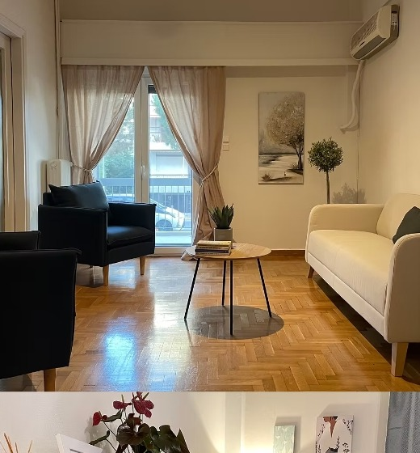
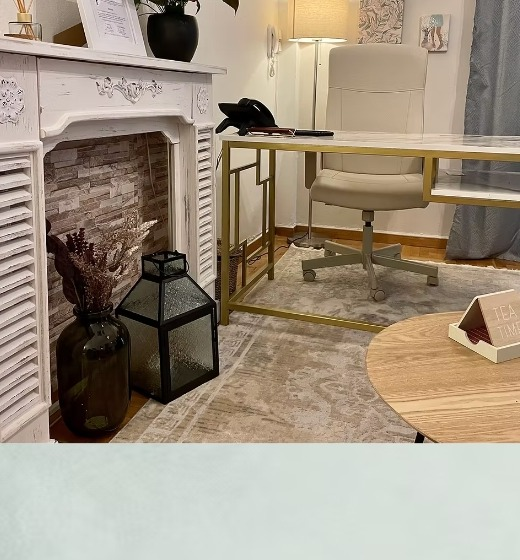

Ατομική Θεραπεία Ενηλίκων
Η ζωή μπορεί να γίνει κατανοητή μόνο προς τα πίσω, αλλά πρέπει να τη ζήσουμε προς τα εμπρός. Συνεδρίες για άγχος, κατάθλιψη, τραύμα, αυτοεκτίμηση και προσωπική ανάπτυξη.
Ψυχολόγος · Γνωσιακή Συμπεριφορική Θεραπεύτρια
Ένας ασφαλής χώρος για εσένα — στον Άλιμο & online. Μαζί, με σεβασμό, επιστημονική γνώση και ουσιαστική ανθρώπινη επαφή, θα κατανοήσουμε τι σε δυσκολεύει και θα βρούμε τον δρόμο προς την ισορροπία.

“Όσα σε δυσκολεύουν, έχουν να διηγηθούν μια ιστορία.”

Σχετικά με εμένα
Η αγάπη μου για την ψυχολογία ξεκίνησε αρκετά νωρίς στη ζωή μου, τόσο μέσα από προσωπικά βιώματα όσο και κοινωνικά ερεθίσματα. Το 2002 αποφάσισα να σπουδάσω Θεολογία στο Αριστοτέλειο Πανεπιστήμιο Θεσσαλονίκης, σε μια εσωτερική ανάγκη να κατανοήσω τι είναι ψυχή. Μετά την αποφοίτησή μου, οι σπουδές στην ψυχολογία αποτελούσαν πλέον μονόδρομο, καθώς η ανάγκη να μπορώ να βοηθάω τους γύρω μου να ειρηνεύσουν και να συμφιλιωθούν με το παρελθόν τους γινόταν ολοένα και πιο δυνατή.
Μετά την ολοκλήρωση των σπουδών μου στο Τμήμα Ψυχολογίας του Εθνικού & Καποδιστριακού Πανεπιστημίου Αθηνών (ΕΚΠΑ), συνέχισα τη διαδρομή μου προς την προσωπική και ακαδημαϊκή ανάπτυξη, παρακολουθώντας συνεχείς εκπαιδεύσεις πάνω στην επιστήμη της ψυχολογίας — από τη συμπεριφορική θεραπεία αγχωδών διαταραχών έως την ψυχοδιαγνωστική αξιολόγηση. Πιστεύω πως κάθε άνθρωπος έχει τους δικούς του ρυθμούς και τη δική του ιστορία — ο ρόλος μου είναι να περπατήσω δίπλα σας, με σεβασμό, επιστημονική γνώση και ενσυναίσθηση.
Από το 2020 παρακολουθώ περιστατικά ιδιωτικά, ενώ από τις αρχές του 2022 λειτουργεί ο δικός μου χώρος θεραπείας & συμβουλευτικής στον Άλιμο.
Πώς μπορώ να βοηθήσω
Η ζωή μπορεί να γίνει κατανοητή μόνο προς τα πίσω, αλλά πρέπει να τη ζήσουμε προς τα εμπρός. Συνεδρίες για άγχος, κατάθλιψη, τραύμα, αυτοεκτίμηση και προσωπική ανάπτυξη.
Κάποιες φορές δεν πληγωνόμαστε από αυτό που «κάνει» ο άλλος, αλλά από αυτό που πιστεύουμε ότι σημαίνει. Δουλειά στην επικοινωνία και τη σχέση σας.
Οι σκέψεις μας ταράζουν τα πράγματα, αλλά οι απόψεις μας γι' αυτά. Τεχνικές βασισμένες σε επιστημονικά τεκμηριωμένες μεθόδους για αγχώδεις διαταραχές.
Κλινική συνέντευξη και ψυχοδιαγνωστική εκτίμηση για σαφέστερη κατανόηση του προβλήματος.
Τεχνικές χαλάρωσης και ενσυνειδητότητας (Mindfulness-Based Cognitive Therapy) για καλύτερη ποιότητα ζωής.
Ασφαλείς τηλεσυνεδρίες μέσω βιντεοκλήσης, για όποιον δεν μπορεί να παρευρεθεί δια ζώσης στον Άλιμο.
Η προσέγγισή μου
Γνωριζόμαστε, συζητάμε τι σας φέρνει σε θεραπεία και θέτουμε από κοινού τους στόχους.
Σχεδιάζουμε μαζί την πορεία της θεραπείας, προσαρμοσμένη στις δικές σας ανάγκες.
Τακτικές συνεδρίες, αξιολόγηση προόδου και προσαρμογές όπου χρειάζεται.
Βρείτε με & στο
Συχνές Ερωτήσεις
Κάθε συνεδρία διαρκεί περίπου 45-50 λεπτά. Η πρώτη συνάντηση μπορεί να διαρκέσει λίγο περισσότερο.
Ναι. Ο επαγγελματικός απόρρητος τηρείται σύμφωνα με τον ιατρικό κώδικα δεοντολογίας.
Ναι, μέσω ασφαλούς πλατφόρμας βιντεοκλήσης, για όσους δεν μπορούν να παρευρεθούν στο ιατρείο.
Συμπληρώστε τη φόρμα επικοινωνίας παρακάτω ή καλέστε στο τηλέφωνο του ιατρείου.
Επικοινωνία
Επικοινωνήστε μαζί μου για να προγραμματίσουμε την πρώτη μας συνάντηση. Απαντάω σε όλα τα μηνύματα εντός 24 ωρών.
Στοιχεία επικοινωνίας βάσει της επίσημης ιστοσελίδας (leniavlassi.com).